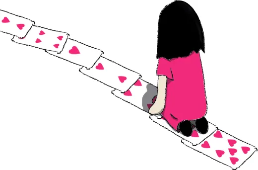

Accueil · Nos actions
Là où les enfants nous attendent
Plusieurs centaines de visites par an et plusieurs milliers d'enfants rencontrés, en Île-de-France, en Eure-et-Loir et jusqu'à Montpellier.
De chambre en chambre
Nos magiciens amateurs se déplacent bénévolement dans les établissements hospitaliers. Ils vont de chambre en chambre, auprès des malades et souvent de leur famille, sur plus de 300 déplacements par an.
Pas de scène, pas de rideau : un tour de cartes à cinquante centimètres d'un lit, une pièce qui disparaît dans la main d'un enfant. La magie de proximité marche parce qu'elle se joue à deux.
L'association est aussi ponctuellement sollicitée par des associations caritatives ou des organisateurs de manifestations pour offrir des spectacles.

Où nous intervenons
Hôpitaux, centres de rééducation, instituts médico-éducatifs : treize établissements nous accueillent régulièrement.

Votre établissement aimerait nous recevoir ?
Écrivez-nous : nous organisons les visites avec les équipes soignantes.